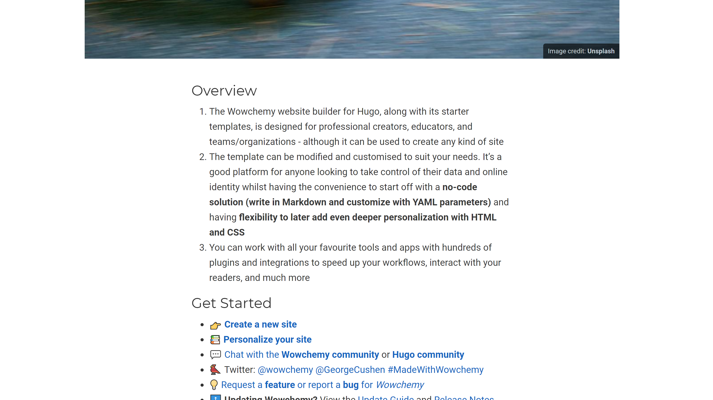
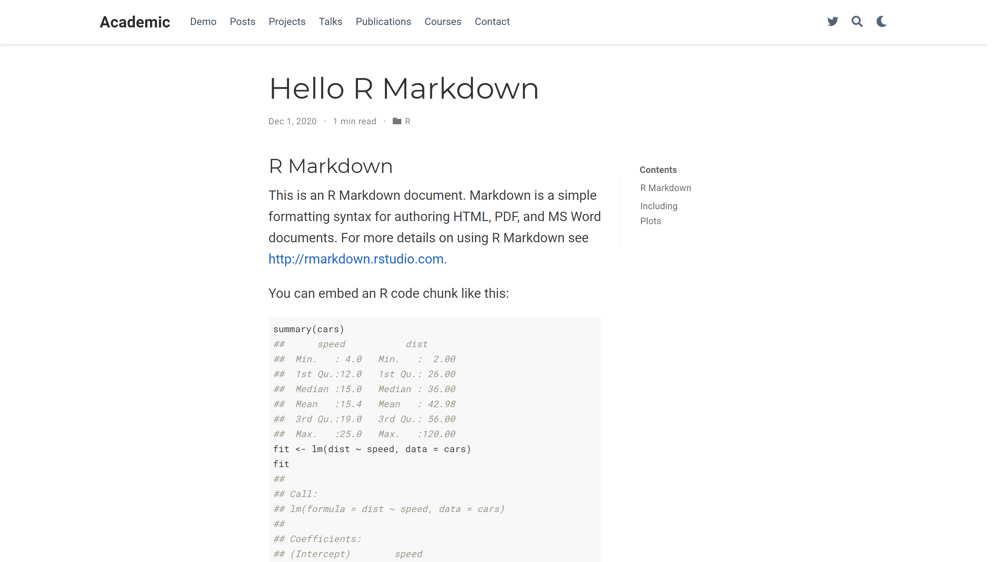

blogdown::new_site(theme = "wowchemy/starter-hugo-academic")1 Welcome!
Welcome to my very first blog post (i.e., I do not count ggpacman).
The focus of this post is on blogdown (github.com/rstudio/blogdown), in particular on how to have a table of contents (TOC) on either the left or the right side of a post to ease the navigation through a long post.
In the past few weeks, I have been slowly getting my head around blogdown and HUGO, to finally published this website about a week ago.
One of the latest tweak I had to figure out was: how to get a floating TOC.
Getting a TOC is quite easy with an Rmarkdown, thus it should be the same in blogdown.
---
output:
rmarkdown::html_document:
toc: true
---For the remaining of this post, I will use the “wowchemy/starter-hugo-academic” HUGO theme within a new default blogdown website created with the following function call.
2 TL;DR
Within a blogdown installation based on the “wowchemy/starter-hugo-academic” HUGO theme:
-
Create
<root>/layouts/_default/single.html.writeLines( text = c( '{{- define "main" -}}', '<article class="article">', ' {{ partial "page_header" . }}', ' <div class="article-container">', ' <div class="row">', ' <div class="col-12 col-lg-9 article-style">', ' {{ .Content }}', ' </div>', ' <div class="col-12 col-lg-3 docs-toc">', ' <ul class="nav toc-top">', ' <li>', ' <a href="#" id="back_to_top" class="docs-toc-title">', ' {{ i18n "on_this_page" }}', ' </a>', ' </li>', ' </ul>', ' {{ .TableOfContents }}', ' </div>', ' </div>', ' {{ partial "page_footer" . }}', ' </div>', '</article>', '{{- end -}}' ), con = "layouts/_default/single.html" ) -
Add to your
<root>/.Rprofile.options(blogdown.method = "markdown") -
Write your posts in an
RmdorRmarkdownfile (it Makes no difference now) with the following in the YAML header.output: blogdown::html_page: toc: true You are all set!
Note: To a more complete setup workflow for blogdown, I recommend to have a look at Alison Hill’s blog post: “Up & Running with Blogdown in 2021”.
3 Default Rmarkdown Post
Once installed, several default posts are available, including simple markdown file, Jupyter notebook file and Rmarkdown file.
Most of this post will focus on the Rmarkdown file with .Rmd extension.
The default Rmarkdown file can be found at content/post/2020-12-01-r-rmarkdown/index.en.Rmd from the root directory of the website.
---
title: "Hello R Markdown"
author: "Frida Gomam"
date: 2020-12-01T21:13:14-05:00
categories: ["R"]
tags: ["R Markdown", "plot", "regression"]
---
```{r setup, include=FALSE}
knitr::opts_chunk$set(collapse = TRUE)
```
## R Markdown
This is an R Markdown document. Markdown is a simple formatting syntax for authoring HTML, PDF, and MS Word documents. For more details on using R Markdown see <http://rmarkdown.rstudio.com>.
You can embed an R code chunk like this:
```{r cars}
summary(cars)
fit <- lm(dist ~ speed, data = cars)
fit
```
## Including Plots
You can also embed plots. See Figure \@ref(fig:pie) for example:
```{r pie, fig.cap='A fancy pie chart.', tidy=FALSE}
par(mar = c(0, 1, 0, 1))
pie(
c(280, 60, 20),
c('Sky', 'Sunny side of pyramid', 'Shady side of pyramid'),
col = c('#0292D8', '#F7EA39', '#C4B632'),
init.angle = -50, border = NA
)
```To be fair, the above document is not exactly the default Rmarkdown file.
In fact, I decreased the headings level, or increase the number of #, by one.
The reason for this small modification comes from the default configuration of HUGO within the config.yaml file.
...
markup:
defaultMarkdownHandler: goldmark
goldmark:
renderer:
unsafe: true
highlight:
codeFences: false
tableOfContents:
startLevel: 2
endLevel: 3
...As you can see, the TOC is defined to include from level 2 to level 3, so by default, the changes we are going to make would not have any effect for this particular document which only contains level 1 headings.
Posts and any other Rmarkdown contents are rendered with rmarkdown::render_site(), hence, for our default Rmarkdown (content/post/2020-12-01-r-rmarkdown/index.en.Rmd), the rendering is done with rmarkdown::render_site('content/post/2020-12-01-r-rmarkdown/index.en.Rmd').
{kind=link}
Note: In this case, rmarkdown::render_site() produces a HTML file: index.en.html.
4 Default with a TOC
First, let’s edit the default index.en.Rmd file by adding three lines. in the YAML header as we would have done in a regular rmarkdown::html_document() to add a TOC.
For a blogdown post, the output format is blogdown::html_page().
This output format produces a headless HTML file (i.e., there is no need for header/body part, since the file is going to be included as a part of another HTML file).
output:
blogdown::html_page:
toc: trueWith this addition, the index.en.Rmd looks like this (not that different, isn’t it?!).
---
title: "Hello R Markdown"
author: "Frida Gomam"
date: 2020-12-01T21:13:14-05:00
categories: ["R"]
tags: ["R Markdown", "plot", "regression"]
output:
blogdown::html_page:
toc: true
---
```{r setup, include=FALSE}
knitr::opts_chunk$set(collapse = TRUE)
```
## R Markdown
This is an R Markdown document. Markdown is a simple formatting syntax for authoring HTML, PDF, and MS Word documents. For more details on using R Markdown see <http://rmarkdown.rstudio.com>.
You can embed an R code chunk like this:
```{r cars}
summary(cars)
fit <- lm(dist ~ speed, data = cars)
fit
```
## Including Plots
You can also embed plots. See Figure \@ref(fig:pie) for example:
```{r pie, fig.cap='A fancy pie chart.', tidy=FALSE}
par(mar = c(0, 1, 0, 1))
pie(
c(280, 60, 20),
c('Sky', 'Sunny side of pyramid', 'Shady side of pyramid'),
col = c('#0292D8', '#F7EA39', '#C4B632'),
init.angle = -50, border = NA
)
```Since, we changed the YAML header, we need to render again, with rmarkdown::render_site(), the HTML file from index.en.Rmd.
{kind=link}
Now we have a TOC, but it sticks to the top.
At this stage, we did all we could in the Rmarkdown file index.en.Rmd.
5 Modify the Layout
Because everything that relates to the structure of the pages on the website are defined in HTML template files stored in a layouts directory, the answer to our “problem” should be there.
And that is the case, as stated in a issue opened on GitHub (wowchemy/wowchemy-hugo-themes #1520). More precisely in @CharlieLeee’s comment.
As mentioned in the comment, we need to modify a particular file, namely layouts/_default/single.html, but what is inside this layouts/_default/single.html file from the “wowchemy/starter-hugo-academic” theme?
In a default installation, the file is located in the following path themes/github.com/wowchemy/wowchemy-hugo-themes/wowchemy/layouts/_default/single.html and it includes the following HTML/code.
{{- define "main" -}}
<article class="article">
{{ partial "page_header" . }}
<div class="article-container">
<div class="article-style">
{{ .Content }}
</div>
{{ partial "page_footer" . }}
</div>
</article>
{{- end -}}Note: Have a look at HUGO website for the HUDO templating syntax.
We do not want to modify any of the files in the themes directory, so we will create a new file at the root directory of our blogdown website (layouts/_default/single.html).
I am not going to use the code proposed in @CharlieLeee’s comment, but instead a slight modification to make the TOC a bit more responsive.
In this case, the TOC will use three out of the twelve columns in a wide screen (i.e., grid layout). On a smaller screen, the TOC will occupy twelve columns (i.e., equivalent to the css width: 100%;) and will be wrapped after the contents, hence it will be under.
To note and for later, in the code chunk below:
-
.Contentis a HUGO variable which contains the content of the post. -
.TableOfContentsis a HUGO variable which contains the TOC of the post.
{{- define "main" -}}
<article class="article">
{{ partial "page_header" . }}
<div class="article-container">
<div class="row">
<div class="col-12 col-lg-9 article-style">
{{ .Content }} <!-- HUGO variable which contains the content of the post -->
</div>
<div class="col-12 col-lg-3 docs-toc">
<ul class="nav toc-top">
<li>
<a href="#" id="back_to_top" class="docs-toc-title">
{{ i18n "on_this_page" }}
</a>
</li>
</ul>
{{ .TableOfContents }} <!-- HUGO variable which contains the TOC of the post -->
</div>
</div>
{{ partial "page_footer" . }}
</div>
</article>
{{- end -}}Again, we need to render the index.en.Rmd file, or to restart the website (blogdown::stop_server()/blogdown::serve_site()) to ensure all modifications are taken into account.
{kind=link}
Not quite, what we could have expected …
The TOC from the Rmarkdown (HTML) file is still at the top, but there is a “Contents” on the right side (as define in layouts/_default/single.html).
This “Contents” comes from our modified layout file and it is not included in a HUGO variable.
This TOC header is a hypertext reference to the top of the current page.
<ul class="nav toc-top">
<li>
<a href="#" id="back_to_top" class="docs-toc-title">
{{ i18n "on_this_page" }}
</a>
</li>
</ul>Our layout seems to “work”, but somehow, does not include the TOC of our HTML file generated from the index.en.Rmd file.
Let’s have a look at another post in plain markdown from our blogdown website.
Before the modifications of the layout
After the modifications of the layout

It’s looking great for the markdown post!
In conclusion and since we modified the page layout, the issue no longer seems to be on the HUGO side.
If we take a look at the HTML file produced by rmarkdown::render_site().
---
title: "Hello R Markdown"
author: "Frida Gomam"
date: 2020-12-01T21:13:14-05:00
categories: ["R"]
tags: ["R Markdown", "plot", "regression"]
output:
blogdown::html_page:
toc: true
---
<script src="index.en_files/header-attrs/header-attrs.js"></script>
<div id="TOC">
<ul>
<li><a href="#r-markdown">R Markdown</a></li>
<li><a href="#including-plots">Including Plots</a></li>
</ul>
</div>
<div id="r-markdown" class="section level2">
<h2>R Markdown</h2>
<p>This is an R Markdown document. Markdown is a simple formatting syntax for authoring HTML, PDF, and MS Word documents. For more details on using R Markdown see <a href="http://rmarkdown.rstudio.com" class="uri">http://rmarkdown.rstudio.com</a>.</p>
<p>You can embed an R code chunk like this:</p>
<pre class="r"><code>summary(cars)
## speed dist
## Min. : 4.0 Min. : 2.00
## 1st Qu.:12.0 1st Qu.: 26.00
## Median :15.0 Median : 36.00
## Mean :15.4 Mean : 42.98
## 3rd Qu.:19.0 3rd Qu.: 56.00
## Max. :25.0 Max. :120.00
fit <- lm(dist ~ speed, data = cars)
fit
##
## Call:
## lm(formula = dist ~ speed, data = cars)
##
## Coefficients:
## (Intercept) speed
## -17.579 3.932</code></pre>
</div>
<div id="including-plots" class="section level2">
<h2>Including Plots</h2>
<p>You can also embed plots. See Figure <a href="#fig:pie">1</a> for example:</p>
<pre class="r"><code>par(mar = c(0, 1, 0, 1))
pie(
c(280, 60, 20),
c('Sky', 'Sunny side of pyramid', 'Shady side of pyramid'),
col = c('#0292D8', '#F7EA39', '#C4B632'),
init.angle = -50, border = NA
)</code></pre>
<div class="figure"><span id="fig:pie"></span>
<img src="index.en_files/figure-html/pie-1.png" alt="A fancy pie chart." width="672" />
<p class="caption">
Figure 1: A fancy pie chart.
</p>
</div>
</div>To narrow down where to look a little bit, I remove all parts not related to the TOC generated in the HTML file.
<div id="TOC">
<ul>
<li><a href="#r-markdown">R Markdown</a></li>
<li><a href="#including-plots">Including Plots</a></li>
</ul>
</div>In this part, we are interested in the div which includes the TOC and we can see that the id is "TOC".
You might not know and you will after reading this, but HUGO parses the headings from markdown (i.e., #, ##, etc.) and stores all those headings in an HTML structure (i.e., nav) with id="TableOfContents".
Seems familiar?! It is the HUGO variable seen earlier, which contains the TOC.
To know this, well you have to read HUGO’s documentation.
At this point, you might not see where all this is going.
Let me clarify all the information we have:
- HUGO translate markdown files to HTML files.
- HUGO has a variable/id for the TOC, named
TableOfContents - We can change the layout of the HUGO theme to include TOC (if the theme does not already include it as for “wowchemy/starter-hugo-academic”).
- It works on plain markdown posts.
- It does not on HTML posts produced from
.Rmdfiles.
In conclusion, there is something wrong with the HTML files produced from .Rmd files.
6 Fixing .Rmd/.html Posts
blogdown provides an add-in to easily creates new post (blogdown:::new_post_addin()), in which you can decide what is the file format/extension you want to use.
You can change the default in your .Rprofile with, for example .Rmd, as your default using options(blogdown.ext = ".Rmd").
You are probably (as I am) more familiar with the Rmd extension.
-
.Rmdproduces.htmlwithrmarkdown::render_site().
And the floating TOC is not working in that case.
Let’s modify the extension to Rmarkdown.
-
.Rmarkdownproduces.markdown(basically the same as.md) withrmarkdown::render_site().

It works!
We have a floating TOC when using .Rmarkdown extension, thus when we do not use pandoc to translate markdown to HTML.
7 I Want Rmd, not Rmarkdown!
We could only use .Rmarkdown file and stop right there, but what if we wanted to keep our favourite .Rmd extension everywhere?
The solution to this is quite simple!
- In the
.Rprofileat the root of yourblogdownwebsite, change the default rendering method to"markdown"usingoptions(blogdown.method = "markdown"). - Restart R.
- You are all set!
rmarkdown::render_site()will only produce markdown file when used withblogdown.
8 Conclusion
If you want a floating TOC, you should not generates HTML files from your Rmarkdown files and you need to add the HUGO variable .TableOfContents in the layout HTML file controlling the type of content you want the floating TOC to be.
Note: To a more complete setup workflow for blogdown, I recommend to have a look at Alison Hill’s blog post: “Up & Running with Blogdown in 2021”.
9 Going in Style
{kind=link}
Because, the TOC has an id which is TableOfContents, you can control the style of the TOC with (s)css (i.e., #TableOfContents!
For example, to get the left border going up including the “Contents” header.
#TableOfContents, .docs-toc-title {
border-left: 1px solid $sta-primary;
/* "$sta-primary" is the primary colour from the theme (sass/scss) */
}You might also want to increase the width of the article container, because you now have TOC sharing the space with the article itself.
.article-container {
max-width: 960px;
}